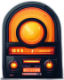

Your favorite radio
Create your own radio station
It's simple!
it's much harder to do it right!
More than 500 new radio stations appear on online platforms
such as YouTube every month. And only a few of them become
popular and bring significant profit. What's the secret?
What is the formula for success? Find out at the upcoming
two-day FREE intensive!
to learn more